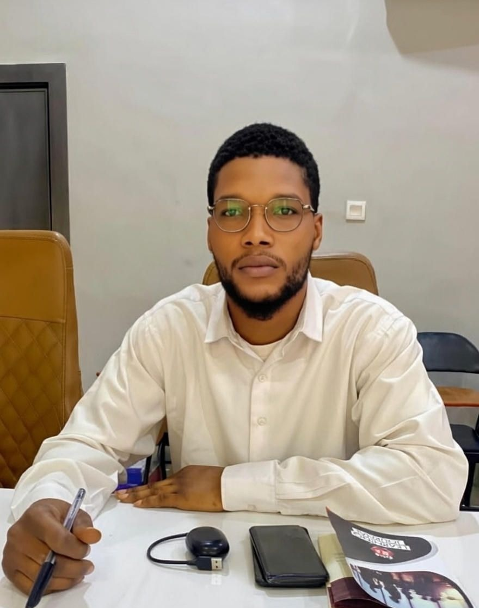

Nwaigwe Okechukwu Augustine | WDD 130

My name is Okechukwu Augustine, and I am proudly from Ebonyi State, Nigeria. I am currently an enthusiastic student at Brigham Young University-Idaho, where I am excited to embark on this academic journey. Beyond my studies, I have a strong passion for both sports and technology. I find great enjoyment and challenge in playing football, which has taught me valuable lessons in teamwork and strategy. Complementing this, I am equally passionate about programming, particularly with Python. I love exploring its capabilities and applying it to various projects, constantly seeking to expand my coding skills. I look forward to integrating these diverse interests as I progress in my education and career.